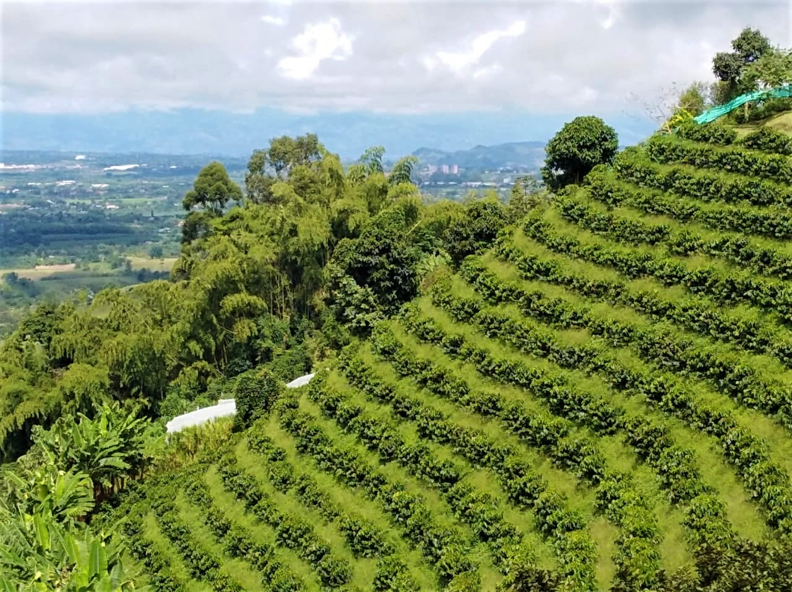
La Divisa De Don Juan
Vía Altagracia, Altagracia, Pereira, Risaralda
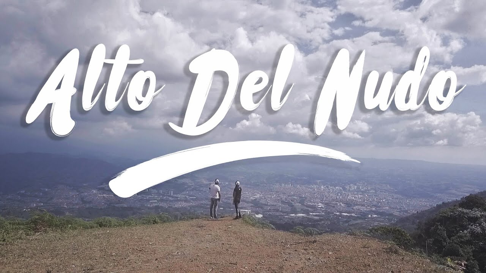
Alto Del Nudo
Pereira, Risaralda
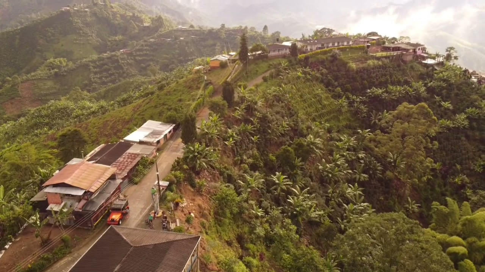
Alto Del Toro
Pereira, Risaralda

Jardín Botánico
Universidad tecnologica de pereira, Risaralda
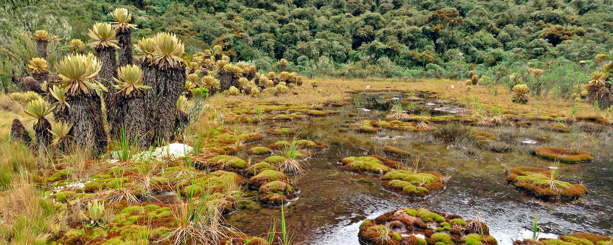
Parque Nacional Natural Tatamá
Cra. 5 #565, Pueblo Rico, Risaralda
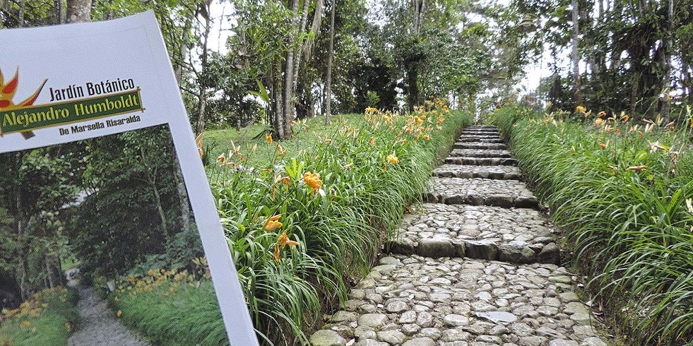
Jardín Botánico De Marsella
Marsella, Risaralda
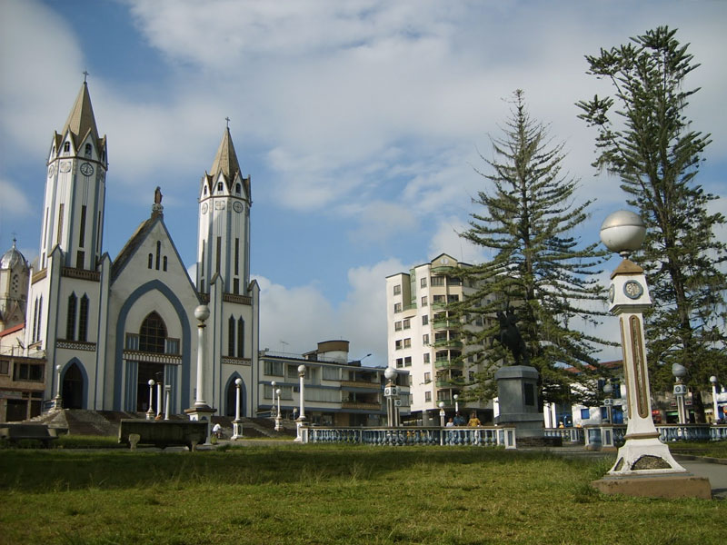
Parque Las Araucarias
Cl. 13, Santa Rosa de Cabal, Risaralda
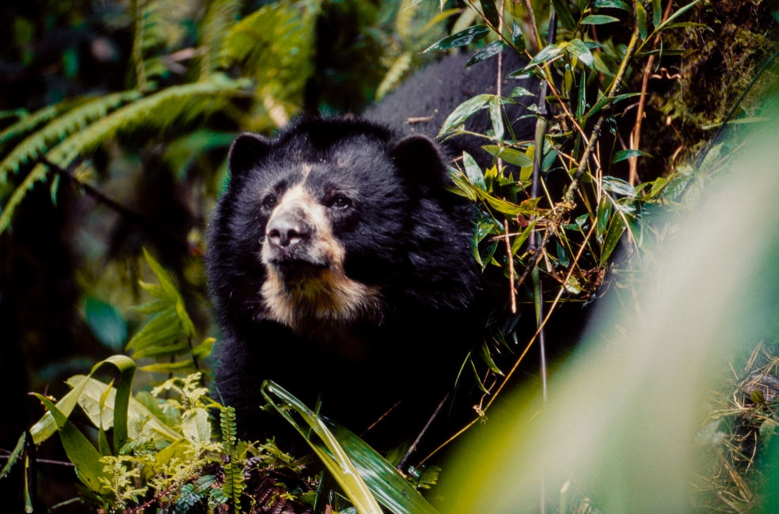
Parque Regional Natural Cuchilla de San Juan
Belén de Umbría, Risaralda

Parque Natural Regional Santa Emilia
Carrera 4 #1"N, Belén de Umbría, Risaralda
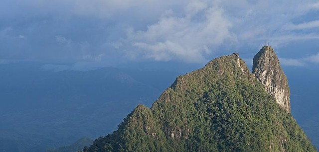
Cerro Batero
Quinchía, Risaralda
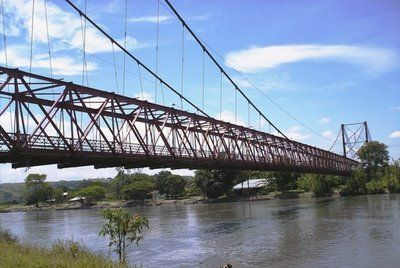
Puente Bernardo Arango
Cra 8 #3-2, La Virginia, Risaralda

Estación Pereira
Marsella, Risaralda
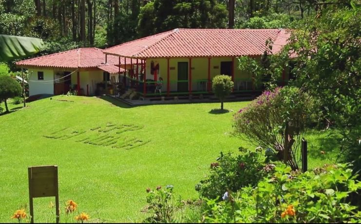
Reserva Forestal La Nona
a 7 km de Marsella,Risaralda
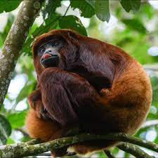
Kaukitá Bosque Reserva
Porteria Malabar Kaukita, km 7 Via Cerritos, Pereira, Risaralda
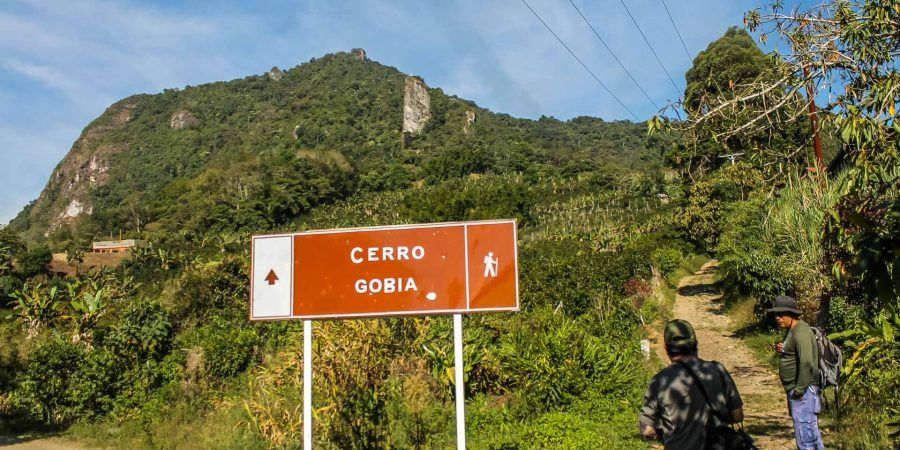
Reserva Natural Cerro Gobia
Quinchía, Risaralda
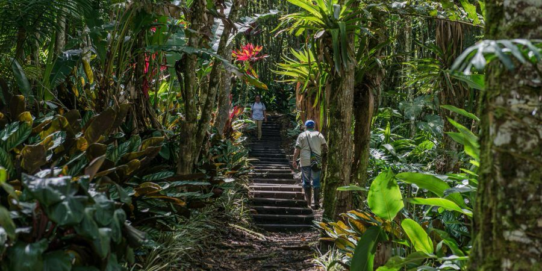
Reserva Natural DMI Agualinda
Apía, Risaralda